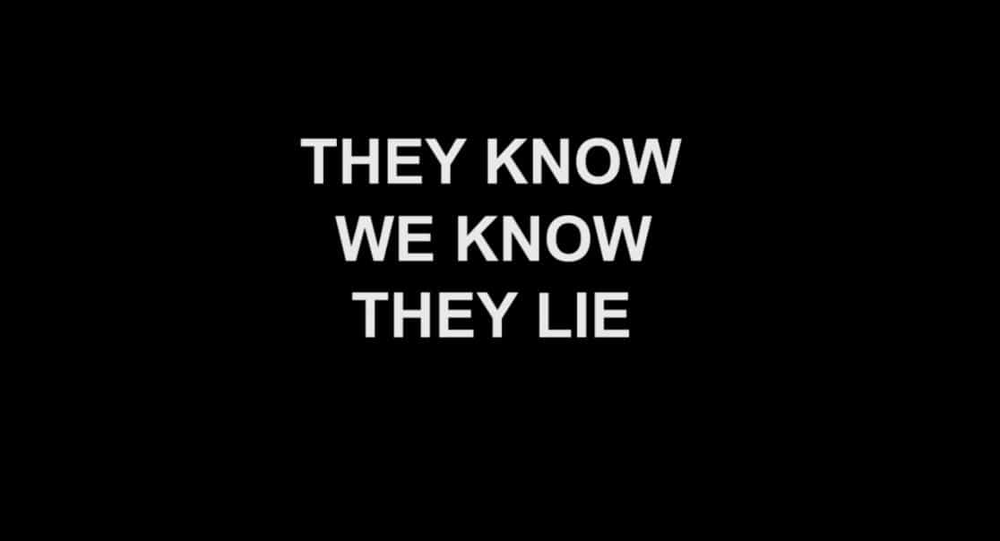
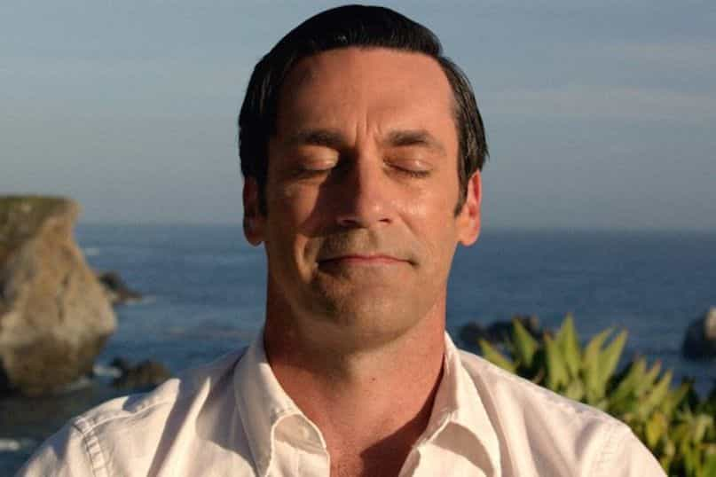

Johannes senses evil afoot in the West, but is trying his best to enjoy the decline.


We appear to be living in a clown world. Men are turning themselves into women, women are turning themselves into men, and brainwashed kids, god bless ‘em, don’t know what to turn themselves into. Meanwhile, small-souled bugmen are protesting outside McDonald’s for Szechuan sauce because of a cartoon, and deranged SJWs can’t pull their eyes away from Donald Trump’s Twitter account.
Faceless corporations are pretending to be social justice revolutionaries while at the same time warping the capitalist system out of all functional recognition for their own gains. Governments and the media are no longer even trying to hide their support for cultural Marxist policies, and as community spirit across the West continues to disintegrate, more pea-brains take to social media to shout at each other and drive culture deeper into the gutter.
A Scottish man is being sent to jail for making a joke on YouTube, childish movements such as #MeToo are being presented with a sickening veneer of credibility by the mainstream media, and events like the Oscars have deteriorated into humorless virtue-signaling crusades.
Once-great Western cities have been reduced to barren corporate wastelands populated by millions of atomized, cultureless, and basically useless consumers roaming shopping malls, filling sports arenas and sitting glued to their Netflix-enabled 75” 4K TVs as they chow down on mystery foodstuffs.
The internet has people living in something akin to a permanent state of road rage as they desperately try to fill the emptiness in their lives by becoming hysterical over events that have little to no impact on them. The morbidly obese are plotting to normalize their immoral and disgraceful lifestyles in favor of sorting themselves out, and Tinder has turned the sexual marketplace into a loveless hellscape.
It’s enough to drive a good man crazy, but those who can smell the rat know that even in the clown world of 2018, life can still be better than ever. Once you know how to adapt, there’s still nothing stopping you living that idyllic 1950s-esque life, working hard, finding something or things you’re passionate about, having a loving family, and deriving nothing but peace and joy from existence.
Perhaps the first thing you need to understand to enjoy life in clown world is that it does not really exist. Yes, all the things I mentioned are happening, but they are things at the extreme ends of culture that get attention because on the internet the most outrageous stories get the most clicks. Not only do corporate media sites exploit this, but so do superficially-rational YouTubers like Stefan Molyneux. And if you think Return of Kings isn’t doing this too, you’re as bad as the SJWs (sorry Roosh).
This lowest-common-denominator media landscape leaves us with a caricatured vision of society that filmmaker Adam Curtis dubbed “hypernormalisation” in his 2016 documentary of the same name. Since the 1970s, he argued, governments and technologists have given up on the complex “real world” and built a simple “fake world” run by corporations and kept stable by politicians.
Having faced up to this reality, you must then tackle the dilemma that most people are still living in the “fake world”, which can be an isolating experience. Nonetheless, you must begin the process of blocking these people from your life. As Faceberg tweeted…
I can bring myself to hate the Normie no longer. Rather, I am oblivious to him; my mind renders no sensory input of his existence. He is null and void—worth less than the spacetime he inhabits. My eyes do not see him, my ears do not hear him, my lips do not speak to him.
— Faceberg (@thefaceberg) March 28, 2018
Normies discarded, you can focus your efforts on rebuilding a set of inputs defined by reason, competence, honesty and respect. This will allow you to build your own culture – a cocoon of intellect, camaraderie and humour that is able to observe clown world from the outside, if it wishes to.

In the words of Terence McKenna:
Don’t watch TV, don’t read magazines, don’t even listen to NPR. Create your own roadshow. The nexus of space and time where you are now is the most immediate sector of your universe, and if you’re worrying about Michael Jackson or Bill Clinton or somebody else, then you are disempowered, you’re giving it all away to icons. This is shit-brained, this kind of thinking. That is all cultural diversion, and what is real is you and your friends and your associations, your highs, your orgasms, your hopes, your plans, your fears.
Do not take their bait. A polarized, outraged populous is “exactly what a corporatist economy wants”, argued Michael Aaron in Quillette. The message of 99% during Occupy Wall Street in 2011 was unifying. “It create[d] cohesion, cooperation, and positive validation, and it turn[ed] the spotlight on those pulling the strings behind the curtain.” Putting everything behind turning 99%-1% into 50%-50% has since served the powers that be very nicely indeed.
Understanding how rage and division is manufactured by the elites and living now in your richer and more tangible reality, you can begin creating an authentic version of yourself while removing the shell that was most likely a bullshit version shaped over many years by corporate uniformity, normie interactions and societal brainwashing.
When you become your true self, you will be surrounded by others who still have their minds intact, who don’t blame anyone or anything for their problems, but like you live an honorable and joyful life.

Before long you will find yourself reading old books, exploring history and philosophy, picking up those sports you left behind as a teenager, and finding fulfilling hobbies and nourishing sources of work. You will see the world in a new light – see the beauty of nature and the brightness of the stars and moon as your masculine spirit is reenergized. Everything will become interesting, and the future will seem bright.
Relationships with your family will be repaired, you will have a stronger bond with your girlfriend, and you will the see the humour in everything. You will not let hate fester inside, because you will know that hate only comes from people who are trying to condition you. Instead you will lead a life defined by love and harmony. You will lift weights (this is not optional), go running in the wild, and respect your body.
You won’t live with fear and resentment like those with Trump Derangement Syndrome or those who give themselves nothing to be proud of. Instead you will realize that we have created a world in which so much is great, and that there is much to be thankful for. You will feel the pain of this greatness being squandered, but you will learn to accept it and the anger will subside as your happiness flourishes.
Read More: Enjoy The American Decline